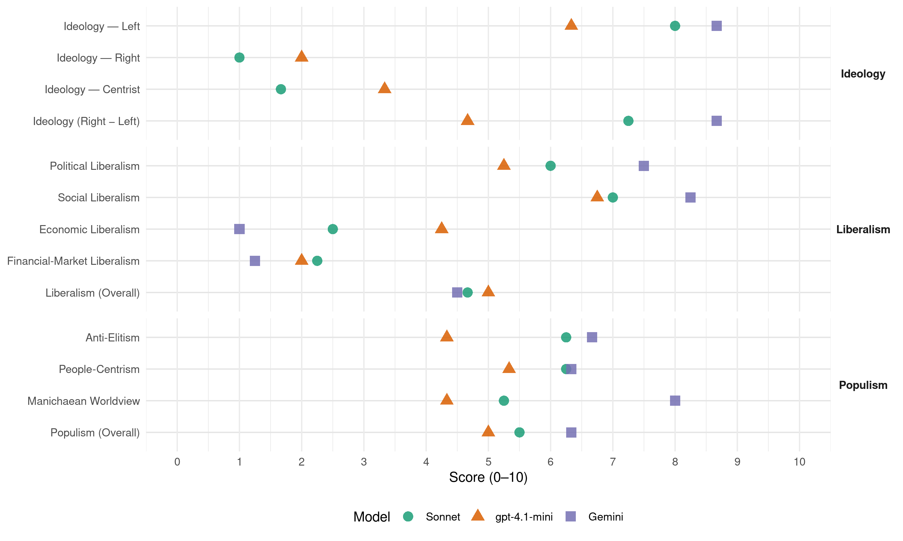

PCP (Portugal, 2002)
manifesto_id 35220_200203
Get full text: This site shows derived annotations and short verbatim quotes only. The full manifesto text is © Manifesto Project / WZB — obtain it via manifesto-project.wzb.eu using the manifesto_id above.
Headline scores
| Dimension | Sonnet | gpt-4.1-mini | Gemini |
|---|---|---|---|
| Populism (Overall) | 5.5 | 5.0 | 6.3 |
| Anti-Elitism | 6.2 | 4.3 | 6.7 |
| People-Centrism | 6.2 | 5.3 | 6.3 |
| Manichaean Worldview | 5.2 | 4.3 | 8.0 |
| Ideology (Right − Left) | 7.2 | 4.7 | 8.7 |
| Liberalism (Overall) | 4.7 | 5.0 | 4.5 |
| Political Liberalism | 6.0 | 5.2 | 7.5 |
| Social Liberalism | 7.0 | 6.8 | 8.2 |
| Economic Liberalism | 2.5 | 4.2 | 1.0 |
| Financial-Market Liberalism | 2.2 | 2.0 | 1.2 |
Evidence per dimension
Economic Liberalism
Gemini · score 1.0 · verified · chunk 1
“recusando a continuação da privatização e liberalização de serviços”
fazendo um uso racional da energia e dos recursos naturais. Uma política que defenda a produção nacional e valorize o trabalho, e que, recusando a continuação da privatização e liberalização de serviços, empresas e mercados públicos
Gemini · score 1.0 · verified · chunk 2
“combate ao desenvolvimento do processo de liberalização”
total ou parcial do capital dos CTT e combate ao desenvolvimento do processo de liberalização. A importância do papel dos CTT, num
Gemini · score 1.0 · verified · chunk 3
“resistir às pressões da OMC para a liberalização”
ensino superior público, gratuito e de qualidade são objectivos para concretizar a democratização do acesso e da frequência do ensino superior pelas várias camadas sociais e etárias do País. o País carece de uma verdadeira política de esquerda nesta matéria, capaz de resistir às pressões da OMC para a liberalização dos serviços, incluindo a Educação, que pretendem levar ao seu tratamento como mercadoria.
Gemini · score 1.0 · verified · chunk 4
“termo da actual política de liberalização e de privatização”
redistributivo e a coesão económica e social. – O termo da actual política de liberalização e de privatização de serviços públicos e o reforço do sector público.
gpt-4.1-mini · score 4.0 · verified · chunk 1
“defenda a produção nacional e valorize o trabalho”
Uma política que defenda a produção nacional e valorize o trabalho, e que, recusando a continuação da privatização e liberalização de serviços, empresas e mercados públicos, defenda um sector público forte, dinâmico e eficiente, a preservação pública de alavancas fundamentais da economia e serviços públicos de qualidade.
gpt-4.1-mini · score 4.0 · verified · chunk 2
“política fiscal para os mPME diminuindo a carga fiscal dos sectores produtivos”
- Uma política fiscal para os mPME diminuindo a carga fiscal dos sectores produtivos e combatendo a diferença percentual existente de facto entre as mPME e os grandes grupos económicos e financeiros.
gpt-4.1-mini · score 7.0 · verified · chunk 3
“uma efectiva educação pública, gratuita e de qualidade, com o alargamento da escolaridade obrigatória até aos 12 anos”
– Uma efectiva educação pública, gratuita e de qualidade, com o alargamento da escolaridade obrigatória até aos 12 anos. – Um forte investimento por parte do Estado, no sentido de criar uma eficaz rede escolar pública, a todos os níveis de ensino, dotando todas as escolas do equipamento necessário ao seu bom funcionamento — pavilhões gimnodesportivos, campos desportivos, bibliotecas, salas de estudo, laboratórios, equipamentos informáticos, salas de convívio.
gpt-4.1-mini · score 2.0 · verified · chunk 4
“apoios significativos e sem constrangimentos à actividade industrial no País”
Apoios significativos e sem constrangimentos à actividade industrial no País, e às pequenas e médias empresas, como forma de potenciar o seu crescimento e modernização. Um reforço dos fundos estruturais, tendo em conta o alargamento, a coesão económica e social, a completa absorção e uma correcta aplicação dos fundos comunitários, como contributo para um desenvolvimento equilibrado de todo o território nacional.
Sonnet · score 2.0 · verified · chunk 1
“recusando a continuação da privatização e liberalização”
recusando a continuação da privatização e liberalização de serviços, empresas e mercados públicos, defenda um sector público forte, dinâmico e eficiente
Sonnet · score 2.0 · verified · chunk 2
“Parar de imediato todos os processos de privatizações”
o PCP propõe: – Parar de imediato todos os processos de privatizações e de desresponsabilização do Estado em áreas e serviços públicos
Sonnet · score 3.0 · verified · chunk 3
“pressões da OMC para a liberalização”
O País carece de uma verdadeira política de esquerda nesta matéria, capaz de resistir às pressões da OMC para a liberalização dos serviços, incluindo a Educação
Sonnet · score 3.0 · verified · chunk 4
“política de liberalização e de privatização de serviços públicos”
O termo da actual política de liberalização e de privatização de serviços públicos e o reforço do sector público.
Financial-Market Liberalism
Gemini · score 1.0 · verified · chunk 1
“tributação das empresas financeiras e seguradoras e das operações de títulos e cambiais”
o desagravamento dos rendimentos do trabalho e da actividade produtiva, o aprofundamento da tributação das empresas financeiras e seguradoras e das operações de títulos e cambiais não suportadas em transacções comerciais
Gemini · score 1.0 · verified · chunk 2
“combater a tentativa de entrega à gestão privada”
interesses privados com todos os perigos da especulação financeira. O PCP combaterá a tentativa de entrega à gestão privada da carteira de títulos do Fundo de Estabilização
Gemini · score 2.0 · verified · chunk 3
“fiscalização efectiva da publicidade no que diz respeito aos produtos financeiros”
estabelecer plataformas de colaboração entre entidades públicas e privadas, com vista à adopção de medidas de «controlo» de concessão de crédito, que deverão ter em conta a situação patrimonial, presente e previsível do consumidor, em conjugação com a realização de acções sistemáticas de informação e aconselhamento sobre a temática do crédito ao consumo. – fiscalização efectiva da publicidade no que diz respeito aos produtos financeiros.
Gemini · score 1.0 · verified · chunk 4
“combate eficaz aos movimentos de capitais especulativos”
restritivas. – Um combate eficaz aos movimentos de capitais especulativos, nomeadamente pela sua tributação. – O alargamento da
gpt-4.1-mini · score 2.0 · verified · chunk 1
“penalização, por via fiscal dos investimentos especulativos”
Penalização pela via fiscal dos investimentos especulativos e regulamentação rigorosa dos investimentos em produtos financeiros derivados.
gpt-4.1-mini · score 2.0 · verified · chunk 2
“Reforçar e diversificar o sistema de financiamento afectando ao Sistema Público uma percentagem de uma taxa a incidir sobre as transacções financeiras realizadas na Bolsa de Valores”
– Reforçar e diversificar o sistema de financiamento afectando ao Sistema Público uma percentagem de uma taxa a incidir sobre as transacções financeiras realizadas na Bolsa de Valores.
Sonnet · score 1.0 · verified · chunk 1
“penalização dos investimentos especulativos”
Penalização pela via fiscal dos investimentos especulativos e regulamentação rigorosa dos investimentos em produtos financeiros derivados
Sonnet · score 2.0 · verified · chunk 2
“taxa a incidir sobre as transacções financeiras”
afectando ao Sistema Público uma percentagem de uma taxa a incidir sobre as transacções financeiras realizadas na Bolsa de Valores
Sonnet · score 4.0 · verified · chunk 3
“contratos de crédito ao consumo”
Adopção de um conjunto de medidas para assegurar uma maior transparência, uma informação mais completa, rigorosa e clara para os consumidores na celebração de contratos de crédito ao consumo.
Sonnet · score 2.0 · verified · chunk 4
“movimentos de capitais especulativos”
Um combate eficaz aos movimentos de capitais especulativos, nomeadamente pela sua tributação.
Political Liberalism
Gemini · score 7.0 · verified · chunk 1
“respeito pelo princípio da separação e interdependência dos órgãos de soberania”
eliminar a corrupção e o tráfico de influências, e as imposições dos grupos e poderes económicos. O que exige, no respeito pelo princípio da separação e interdependência dos órgãos de soberania, o reforço dos poderes e do papel fiscalizador
Gemini · score 7.0 · verified · chunk 2
“Reforço da participação democrática dos cidadãos”
como essenciais: – Reforço da participação democrática dos cidadãos. – A prática de um ordenamento na base
Gemini · score 8.0 · verified · chunk 3
“garantia plena da liberdade de expressão”
trabalhadores imigrantes, acabando com a injusta distinção entre autorizações de residência e de permanência, permitindo a apreciação judicial, com efeitos práticos, das decisões administrativas de expulsão e abandonando uma concepção — que resulta da lei actual — que trata todos os cidadãos não comunitários como potenciais delinquentes. - garantia plena da liberdade de expressão, da liberdade de imprensa, do direito à informação
Gemini · score 8.0 · verified · chunk 4
“reforço da democracia portuguesa e da protecção dos direitos”
especialmente importantes. Para o reforço da democracia portuguesa e da protecção dos direitos, liberdades e garantias dos cidadãos em geral
gpt-4.1-mini · score 3.0 · verified · chunk 1
“defenda e aprofunde o regime democrático”
Uma política que defenda e aprofunde o regime democrático, credibilize as funções e actividades políticas, as instituições e o exercício das funções públicas, realizando uma profunda reforma democrática do Estado e da Administração Pública.
gpt-4.1-mini · score 7.0 · verified · chunk 2
“garantir a participação efectiva das populações no seu funcionamento”
– Regionalizar o SNS e garantir a participação efectiva das populações no seu funcionamento.
gpt-4.1-mini · score 8.0 · verified · chunk 3
“Garantia plena da liberdade de expressão, da liberdade de imprensa, do direito à informação”
- Garantia plena da liberdade de expressão, da liberdade de imprensa, do direito à informação, nomeadamente através de medidas anticoncentração e de transparência da titularidade do capital social das empresas de comunicação social. - Consagração de especial protecção à comunicação social de âmbito regional e local, especialmente à imprensa e rádios locais.
gpt-4.1-mini · score 3.0 · verified · chunk 4
“reforço da democracia portuguesa e da protecção dos direitos, liberdades e garantias”
Para o reforço da democracia portuguesa e da protecção dos direitos, liberdades e garantias dos cidadãos em geral e dos trabalhadores em particular, o PCP propõe: - Clarificação da obrigação do Estado de criar as condições para a efectivação do princípio da igualdade, designadamente atenuando e eliminando as desigualdades sociais, económicas e culturais entre os cidadãos.
Sonnet · score 4.0 · mixed · chunk 1
“defenda e aprofunde o regime democrático”
Uma política que defenda e aprofunde o regime democrático, credibilize as funções e actividades políticas, as instituições e o exercício das funções públicas
Sonnet · score 4.0 · verified · chunk 2
“Reforço da participação democrática dos cidadãos”
deverá ser enquadrado por um conjunto de vectores dos quais destacamos, como essenciais: – Reforço da participação democrática dos cidadãos
Sonnet · score 7.0 · verified · chunk 3
“democracia representativa mais genuína”
tornar a democracia representativa mais genuína, defendendo o real alcance da representação proporcional na conversão de votos em mandatos
Sonnet · score 7.0 · verified · chunk 4
“reforço da democracia portuguesa”
Para o reforço da democracia portuguesa e da protecção dos direitos, liberdades e garantias dos cidadãos em geral
Liberalism (Overall)
Gemini · score 4.0 · verified · chunk 1
“respeito pelo princípio da separação e interdependência dos órgãos de soberania”
eliminar a corrupção e o tráfico de influências, e as imposições dos grupos e poderes económicos. O que exige, no respeito pelo princípio da separação e interdependência dos órgãos de soberania, o reforço dos poderes e do papel fiscalizador
Gemini · score 4.0 · verified · chunk 2
“combate ao desenvolvimento do processo de liberalização”
total ou parcial do capital dos CTT e combate ao desenvolvimento do processo de liberalização. A importância do papel dos CTT, num
Gemini · score 5.0 · verified · chunk 3
“garantia plena da liberdade de expressão”
trabalhadores imigrantes, acabando com a injusta distinção entre autorizações de residência e de permanência, permitindo a apreciação judicial, com efeitos práticos, das decisões administrativas de expulsão e abandonando uma concepção — que resulta da lei actual — que trata todos os cidadãos não comunitários como potenciais delinquentes. - garantia plena da liberdade de expressão, da liberdade de imprensa, do direito à informação
Gemini · score 5.0 · verified · chunk 4
“reforço da democracia portuguesa e da protecção dos direitos”
especialmente importantes. Para o reforço da democracia portuguesa e da protecção dos direitos, liberdades e garantias dos cidadãos em geral
gpt-4.1-mini · score 4.0 · verified · chunk 1
“defenda e aprofunde o regime democrático”
Uma política que defenda e aprofunde o regime democrático, credibilize as funções e actividades políticas, as instituições e o exercício das funções públicas, realizando uma profunda reforma democrática do Estado e da Administração Pública.
gpt-4.1-mini · score 5.0 · verified · chunk 2
“garantir a participação efectiva das populações no seu funcionamento”
– Regionalizar o SNS e garantir a participação efectiva das populações no seu funcionamento.
gpt-4.1-mini · score 8.0 · verified · chunk 3
“Garantia plena da liberdade de expressão, da liberdade de imprensa, do direito à informação”
- Garantia plena da liberdade de expressão, da liberdade de imprensa, do direito à informação, nomeadamente através de medidas anticoncentração e de transparência da titularidade do capital social das empresas de comunicação social. - Consagração de especial protecção à comunicação social de âmbito regional e local, especialmente à imprensa e rádios locais.
gpt-4.1-mini · score 3.0 · verified · chunk 4
“reforço da democracia portuguesa e da protecção dos direitos, liberdades e garantias”
Para o reforço da democracia portuguesa e da protecção dos direitos, liberdades e garantias dos cidadãos em geral e dos trabalhadores em particular, o PCP propõe: - Clarificação da obrigação do Estado de criar as condições para a efectivação do princípio da igualdade, designadamente atenuando e eliminando as desigualdades sociais, económicas e culturais entre os cidadãos.
Sonnet · score 3.0 · verified · chunk 1
“Reforço do sector público bancário”
Reforço do sector público bancário, tornando-o capaz de exercer um papel de liderança e equilíbrio do sistema financeiro, bem como de responder às necessidades da economia nacional
Sonnet · score 4.0 · mixed · chunk 2
“igualdade de direitos para as mulheres”
Estando consagrada na lei a igualdade de direitos para as mulheres multiplicam-se, contudo, as situações da falta de realização
Sonnet · score 6.0 · verified · chunk 3
“democracia representativa mais genuína”
tornar a democracia representativa mais genuína, defendendo o real alcance da representação proporcional na conversão de votos em mandatos
Sonnet · score 5.0 · verified · chunk 4
“reforço da democracia portuguesa”
Para o reforço da democracia portuguesa e da protecção dos direitos, liberdades e garantias dos cidadãos em geral
Anti-Elitism
Gemini · score 8.0 · verified · chunk 1
“subordinação às exigências e aos interesses do grande capital”
pelo seu conteúdo marcadamente de classe, pela sua subordinação às exigências e aos interesses do grande capital internacional e nacional, pela sua submissão aos ditames
Gemini · score 8.0 · verified · chunk 2
“conluio entre o grande capital financeiro e o Governo”
íveis convencionais. – Acabar com o conluio entre o grande capital financeiro e o Governo central, traduzido numa escandalosa política de
Gemini · score 4.0 · verified · chunk 4
“mega-processos que envolvem grandes grupos económicos e políticos”
corrupção em toda a Administração Pública. - Investigação e julgamento mais rápido dos mega-processos que envolvem grandes grupos económicos e políticos. - Fomentar um processo coerente de descentralização
gpt-4.1-mini · score 8.0 · verified · chunk 1
“domínio económico, social, político, militar, comunicacional e cultural”
A globalização capitalista constitui um complexo processo de domínio económico, social, político, militar, comunicacional e cultural. É vasta a rede de caminhos pelos quais tem vindo a desenvolver-se e implantar-se e são dramáticas as suas consequências para a maioria da Humanidade:
gpt-4.1-mini · score 2.0 · verified · chunk 2
“Acabar com o conluio entre o grande capital financeiro e o Governo central”
– Acabar com o conluio entre o grande capital financeiro e o Governo central, traduzido numa escandalosa política de privatizações e de mega-fusões que ferem o interesse público.
gpt-4.1-mini · score 3.0 · verified · chunk 4
“investigação e julgamento mais rápido dos mega-processos que envolvem grandes grupos económicos e políticos”
Combate firme e permanente à corrupção em toda a Administração Pública. Investigação e julgamento mais rápido dos mega-processos que envolvem grandes grupos económicos e políticos. Fomentar um processo coerente de descentralização como instrumento de fomentar a participação.
Sonnet · score 8.0 · verified · chunk 1
“subordinação às exigências e aos interesses do grande capital internacional”
pelo seu conteúdo marcadamente de classe, pela sua subordinação às exigências e aos interesses do grande capital internacional e nacional, pela sua submissão aos ditames do imperialismo
Sonnet · score 8.0 · verified · chunk 2
“conluio entre o grande capital financeiro e o Governo central”
Acabar com o conluio entre o grande capital financeiro e o Governo central, traduzido numa escandalosa política de privatizações
Sonnet · score 4.0 · verified · chunk 3
“grandes grupos económicos e políticos”
Investigação e julgamento mais rápido dos mega-processos que envolvem grandes grupos económicos e políticos.
Sonnet · score 5.0 · verified · chunk 4
“grandes grupos económicos e políticos”
Investigação e julgamento mais rápido dos mega-processos que envolvem grandes grupos económicos e políticos.
Ideology — Centrist
gpt-4.1-mini · score 3.0 · verified · chunk 1
“política de compromisso e submissão face à implementação”
À política de compromisso e submissão face à implementação de uma integração desigual e de políticas e orientações comunitárias que penalizam claramente Portugal e, de forma particular, os trabalhadores e outras camadas laboriosas.
gpt-4.1-mini · score 2.0 · verified · chunk 2
“um sector público forte e dinâmico ao serviço da democracia e do desenvolvimento do País”
…construindo um sector público forte e dinâmico ao serviço da democracia e do desenvolvimento do País.
gpt-4.1-mini · score 5.0 · verified · chunk 4
“respeito integral pelos direitos, liberdades e garantias”
Respeito integral pelos direitos, liberdades e garantias e concretização prática dos direitos económicos, sociais, culturais e ambientais, como objectivo e como referência essencial do funcionamento do sistema político.
Sonnet · score 1.0 · verified · chunk 1
“política alternativa e um rumo diferente”
o PCP apresenta uma política alternativa e um rumo diferente e aponta três direcções de luta fundamentais
Sonnet · score 2.0 · verified · chunk 2
“interesses dos utentes residenciais”
revisão dos sistemas tarifários da electricidade e das telecomunicações, defendendo os interesses dos utentes residenciais ou domésticos
Sonnet · score 2.0 · verified · chunk 4
“Combate firme e permanente à corrupção”
Combate firme e permanente à corrupção em toda a Administração Pública.
Ideology — Left
Gemini · score 9.0 · verified · chunk 1
“reforço efectivo, nas grandes potências mundiais, do papel do Estado ao serviço dos grandes grupos transnacionais e do capital financeiro”
em detrimento da imensa maioria da Humanidade. reforço efectivo, nas grandes potências mundiais, do papel do Estado ao serviço dos grandes grupos transnacionais e do capital financeiro. – Agravamento da exploração dos trabalhadores
Gemini · score 9.0 · verified · chunk 2
“não ao serviço dos grupos económicos e financeiros”
orientada ao serviço do povo e do País e não ao serviço dos grupos económicos e financeiros e das multinacionais. Um sector público forte e
Gemini · score 8.0 · verified · chunk 4
“No quadro de uma política de esquerda”
GNR, visando a democratização das Forças de Segurança e o alargamento de direitos dos seus profissionais. No quadro de uma política de esquerda, o PCP entende que a segurança interna do Estado
gpt-4.1-mini · score 9.0 · verified · chunk 1
“política de esquerda que o PCP propõe ao povo português”
A política de esquerda que o PCP propõe ao povo português assume-se em clara ruptura com essa política. Distingue-se pelo seu firme compromisso para com os trabalhadores, o povo e o País.
gpt-4.1-mini · score 3.0 · verified · chunk 2
“política fiscal para os mPME diminuindo a carga fiscal dos sectores produtivos”
- Uma política fiscal para os mPME diminuindo a carga fiscal dos sectores produtivos e combatendo a diferença percentual existente de facto entre as mPME e os grandes grupos económicos e financeiros.
gpt-4.1-mini · score 7.0 · verified · chunk 4
“combate firme e permanente à corrupção em toda a Administração Pública”
Aperfeiçoar e tornar mais rigoroso o regime de incompatibilidades e alargar o período de impedimento do exercício de certas funções privadas após exercício de certas funções políticas essenciais. Combate firme e permanente à corrupção em toda a Administração Pública. Investigação e julgamento mais rápido dos mega-processos que envolvem grandes grupos económicos e políticos.
Sonnet · score 9.0 · verified · chunk 1
“fim do processo de privatizações”
na defesa da produção nacional, na dinamização das actividades de investigação associadas à produção, no fim do processo de privatizações e na reapreciação exaustiva de todos os processos de privatização
Sonnet · score 9.0 · verified · chunk 2
“Fim do processo de privatizações”
o PCP propõe: – Fim do processo de privatizações, incluindo o cancelamento imediato de todos os processos em curso
Sonnet · score 7.0 · verified · chunk 3
“política de esquerda nesta matéria”
O País carece de uma verdadeira política de esquerda nesta matéria, capaz de resistir às pressões da OMC para a liberalização dos serviços
Sonnet · score 7.0 · verified · chunk 4
“termo da actual política de liberalização e de privatização”
O termo da actual política de liberalização e de privatização de serviços públicos e o reforço do sector público.
Ideology (Right − Left)
Gemini · score 9.0 · verified · chunk 1
“reforço efectivo, nas grandes potências mundiais, do papel do Estado ao serviço dos grandes grupos transnacionais e do capital financeiro”
em detrimento da imensa maioria da Humanidade. reforço efectivo, nas grandes potências mundiais, do papel do Estado ao serviço dos grandes grupos transnacionais e do capital financeiro. – Agravamento da exploração dos trabalhadores
Gemini · score 9.0 · verified · chunk 2
“não ao serviço dos grupos económicos e financeiros”
orientada ao serviço do povo e do País e não ao serviço dos grupos económicos e financeiros e das multinacionais. Um sector público forte e
Gemini · score 8.0 · verified · chunk 4
“No quadro de uma política de esquerda”
GNR, visando a democratização das Forças de Segurança e o alargamento de direitos dos seus profissionais. No quadro de uma política de esquerda, o PCP entende que a segurança interna do Estado
gpt-4.1-mini · score 7.0 · verified · chunk 1
“política de esquerda que o PCP propõe ao povo português”
A política de esquerda que o PCP propõe ao povo português assume-se em clara ruptura com essa política. Distingue-se pelo seu firme compromisso para com os trabalhadores, o povo e o País.
gpt-4.1-mini · score 2.0 · verified · chunk 2
“Acabar com o conluio entre o grande capital financeiro e o Governo central”
– Acabar com o conluio entre o grande capital financeiro e o Governo central, traduzido numa escandalosa política de privatizações e de mega-fusões que ferem o interesse público.
gpt-4.1-mini · score 5.0 · verified · chunk 4
“combate firme e permanente à corrupção em toda a Administração Pública”
Aperfeiçoar e tornar mais rigoroso o regime de incompatibilidades e alargar o período de impedimento do exercício de certas funções privadas após exercício de certas funções políticas essenciais. Combate firme e permanente à corrupção em toda a Administração Pública. Investigação e julgamento mais rápido dos mega-processos que envolvem grandes grupos económicos e políticos.
Sonnet · score 9.0 · verified · chunk 1
“anti-corporativa, redistribuição, sector público forte”
recusando a continuação da privatização e liberalização de serviços, empresas e mercados públicos, defenda um sector público forte, dinâmico e eficiente
Sonnet · score 8.0 · verified · chunk 2
“anti-capitalismo e redistribuição social”
Um sector público forte e dinâmico, que contribua para concretizar a propriedade social sobre os sectores básicos e estratégicos
Sonnet · score 6.0 · verified · chunk 3
“política de esquerda nesta matéria”
O País carece de uma verdadeira política de esquerda nesta matéria, capaz de resistir às pressões da OMC para a liberalização dos serviços
Sonnet · score 6.0 · verified · chunk 4
“abandono das orientações neoliberais”
o abandono das orientações neoliberais e orçamentalmente restritivas
Ideology — Right
gpt-4.1-mini · score 2.0 · verified · chunk 1
“combate ao racismo e à xenofobia”
Uma política de integração das comunidades imigrantes e o combate ao racismo e à xenofobia.
gpt-4.1-mini · score 2.0 · verified · chunk 4
“rejeitando a via federalista, a redução de poderes e papel dos países mais pequenos”
Tal perspectiva reclama uma intervenção permanente e firme em defesa dos interesses de Portugal, e no sentido de imprimir um novo rumo à construção europeia, que concretize os princípios da «coesão económica e social» e da «igualização no progresso das condições de vida e de trabalho» inscritos nos Tratados, no respeito pela igualdade de direitos dos Estados que a compõem, recusando a via federalista, a redução de poderes e papel dos países mais pequenos, e a lógica de bloco político-militar.
Sonnet · score 1.0 · verified · chunk 1
“soberania e a independência nacional”
defesa de interesses concretos atingidos pela política do Governo ou por decisões supranacionais que atentam contra a soberania e a independência nacional
Sonnet · score 1.0 · verified · chunk 2
“defesa dos interesses nacionais”
Defesa dos interesses nacionais nas instancias comunitárias. – Garantia do sigilo e inviolabilidade das correspondências
Sonnet · score 1.0 · verified · chunk 3
“combate ao racismo e à xenofobia”
IMIGRANTES E COMBATE AO RACISMO E À XENOFOBIA. O PCP assume os seguintes compromissos relativos à integração dos imigrantes e ao combate ao racismo e à xenofobia
Sonnet · score 1.0 · verified · chunk 4
“independência e soberania nacionais valores inalienáveis”
considera a independência e soberania nacionais valores inalienáveis da nação portuguesa
Manichaean Worldview
Gemini · score 8.0 · verified · chunk 1
“política de direita, praticada quer pelo PS quer pelo PSD”
orientações neoliberais que têm sido dominantes. É uma evidência que a política de direita, praticada quer pelo PS quer pelo PSD, não resolveu (nem resolverá) os principais
Gemini · score 8.0 · verified · chunk 2
“escandalosa política de privatizações e de mega-fusões”
capital financeiro e o Governo central, traduzido numa escandalosa política de privatizações e de mega-fusões que ferem o interesse público. Suspender a
gpt-4.1-mini · score 8.0 · verified · chunk 1
“domínio imperialista do Mundo, o seu controlo sobre os recursos nacionais”
Recurso crescente à força das armas, disfarçada de «ingerência humanitária» ou de «combate ao terrorismo», com o objectivo de alargar e reforçar o domínio imperialista do Mundo, o seu controlo sobre os recursos nacionais e mercado, e visando afastar obstáculos às suas ambições expansionistas, liquidar resistências, sufocar explosões sociais e revolucionárias.
gpt-4.1-mini · score 3.0 · verified · chunk 2
“os grupos económicos e financeiros, que, sejam quais forem as consequências negativas para o País”
…alterando uma situação em que quem verdadeiramente manda, pelo poder real que tem e pelos compromissos que assegura, são os grupos económicos e financeiros, que, sejam quais forem as consequências negativas para o País, apenas conhecem a linguagem dos seus interesses, indissociáveis dos interesses do capital multinacional.
gpt-4.1-mini · score 2.0 · verified · chunk 4
“combatendo designadamente os salários em atraso”
Redução progressiva do horário de trabalho. Garantias do direito ao salário e outras compensações adquiridas, combatendo designadamente os salários em atraso. Consagração de novos direitos e novas obrigações do Estado, em matéria de higiene, saúde e segurança e acidentes de trabalho.
Sonnet · score 7.0 · verified · chunk 1
“política de direita levada a cabo”
Trata-se de mudar de política, de pôr fim à política de direita levada a cabo, com poucas diferenças nas questões mais estruturantes, pelos governos do PSD e do PS
Sonnet · score 7.0 · verified · chunk 2
“grupos económicos e financeiros e das multinacionais”
não ao serviço dos grupos económicos e financeiros e das multinacionais. Um sector público forte e dinâmico para garantir serviços públicos
Sonnet · score 3.0 · verified · chunk 3
“Projectos que foram sucessivamente rejeitados pelo PS e pelo PSD”
O PCP apresentou na Assembleia da República, ao longo das várias legislaturas, projectos-lei que a serem aprovados resolveriam em grande parte os problemas mais prementes dos deficientes portugueses. Projectos que foram sucessivamente rejeitados pelo PS e pelo PSD.
Sonnet · score 4.0 · verified · chunk 4
“nova ordem totalitária hegemonizada pelos EUA”
para enfrentar a «nova ordem» totalitária hegemonizada pelos EUA e outras grandes potências, para construir um mundo mais justo
People-Centrism
Gemini · score 7.0 · verified · chunk 1
“luta do povo português e dos seus movimentos”
princípio da unanimidade em decisões fundamentais para o País. – A luta do povo português e dos seus movimentos e organizações sociais e políticas e a sua convergência
Gemini · score 7.0 · verified · chunk 2
“orientada ao serviço do povo e do País”
equenas e médias empresas, e para que esta seja orientada ao serviço do povo e do País e não ao serviço dos grupos económicos e financeiros
Gemini · score 5.0 · verified · chunk 4
“apoio do Estado ao associativismo popular”
garantias de liberdade de associação e do apoio do Estado ao associativismo popular, designadamente através das colectividades de cultura, desporto
gpt-4.1-mini · score 7.0 · verified · chunk 1
“luta do povo português e dos seus movimentos”
A luta do povo português e dos seus movimentos e organizações sociais e políticas e a sua convergência em complementaridade com outras forças progressistas da União Europeia, na constante defesa de interesses concretos atingidos pela política do Governo ou por decisões supranacionais que atentam contra a soberania e a independência nacional.
gpt-4.1-mini · score 3.0 · verified · chunk 2
“um sector público forte e dinâmico ao serviço da democracia e do desenvolvimento do País”
A concretização do projecto de desenvolvimento nacional que é preciso para responder às necessidades do povo e do País coloca como objectivo e condição, a partir das posições hoje existentes no sector público, o reforço do papel do Estado, garantindo-lhe uma posição determinante nos sectores básicos e estratégicos, construindo um sector público forte e dinâmico ao serviço da democracia e do desenvolvimento do País.
gpt-4.1-mini · score 6.0 · verified · chunk 4
“levar sistematicamente a democracia a todo o País, em especial ao interior das empresas”
Fomentar um processo coerente de descentralização como instrumento de fomentar a participação. Levar sistematicamente a democracia a todo o País, em especial ao interior das empresas, bem como através de sindicatos de polícias e de associações sócio-profissionais de militares e de agentes de forças militarizadas.
Sonnet · score 7.0 · verified · chunk 1
“os trabalhadores, o povo e o País”
Distingue-se pelo seu firme compromisso para com os trabalhadores, o povo e o País. Distingue-se pelo conteúdo dos seus objectivos centrais
Sonnet · score 7.0 · verified · chunk 2
“ao serviço do povo e do País”
para que esta seja orientada ao serviço do povo e do País e não ao serviço dos grupos económicos e financeiros e das multinacionais
Sonnet · score 5.0 · verified · chunk 3
“Uma política de esquerda para a juventude”
JUVENTUDE. Uma política de esquerda para a juventude exige a participação efectiva dos jovens na sua concepção e construção
Sonnet · score 6.0 · verified · chunk 4
“direitos dos cidadãos em geral”
para o reforço da democracia portuguesa e da protecção dos direitos, liberdades e garantias dos cidadãos em geral e dos trabalhadores em particular
Populism (Overall)
Gemini · score 8.0 · verified · chunk 1
“subordinação às exigências e aos interesses do grande capital”
pelo seu conteúdo marcadamente de classe, pela sua subordinação às exigências e aos interesses do grande capital internacional e nacional, pela sua submissão aos ditames
Gemini · score 8.0 · verified · chunk 2
“conluio entre o grande capital financeiro e o Governo”
íveis convencionais. – Acabar com o conluio entre o grande capital financeiro e o Governo central, traduzido numa escandalosa política de
Gemini · score 3.0 · verified · chunk 4
“mega-processos que envolvem grandes grupos económicos e políticos”
corrupção em toda a Administração Pública. - Investigação e julgamento mais rápido dos mega-processos que envolvem grandes grupos económicos e políticos. - Fomentar um processo coerente de descentralização
gpt-4.1-mini · score 8.0 · verified · chunk 1
“luta do povo português e dos seus movimentos”
A luta do povo português e dos seus movimentos e organizações sociais e políticas e a sua convergência em complementaridade com outras forças progressistas da União Europeia, na constante defesa de interesses concretos atingidos pela política do Governo ou por decisões supranacionais que atentam contra a soberania e a independência nacional.
gpt-4.1-mini · score 3.0 · verified · chunk 2
“Acabar com o conluio entre o grande capital financeiro e o Governo central”
– Acabar com o conluio entre o grande capital financeiro e o Governo central, traduzido numa escandalosa política de privatizações e de mega-fusões que ferem o interesse público.
gpt-4.1-mini · score 4.0 · verified · chunk 4
“investigação e julgamento mais rápido dos mega-processos que envolvem grandes grupos económicos e políticos”
Combate firme e permanente à corrupção em toda a Administração Pública. Investigação e julgamento mais rápido dos mega-processos que envolvem grandes grupos económicos e políticos. Fomentar um processo coerente de descentralização como instrumento de fomentar a participação.
Sonnet · score 7.0 · verified · chunk 1
“grande capital financeiro e o Governo central”
Acabar com o conluio entre o grande capital financeiro e o Governo central, traduzido numa escandalosa política de privatizações e de mega-fusões que ferem o interesse público
Sonnet · score 7.0 · verified · chunk 2
“poder económico se subordine ao poder político”
fundamental para que o poder económico se subordine ao poder político, alterando uma situação em que quem verdadeiramente manda
Sonnet · score 4.0 · verified · chunk 3
“grandes grupos económicos e políticos”
Investigação e julgamento mais rápido dos mega-processos que envolvem grandes grupos económicos e políticos.
Sonnet · score 4.0 · verified · chunk 4
“grandes grupos económicos e políticos”
Investigação e julgamento mais rápido dos mega-processos que envolvem grandes grupos económicos e políticos.
Social Liberalism